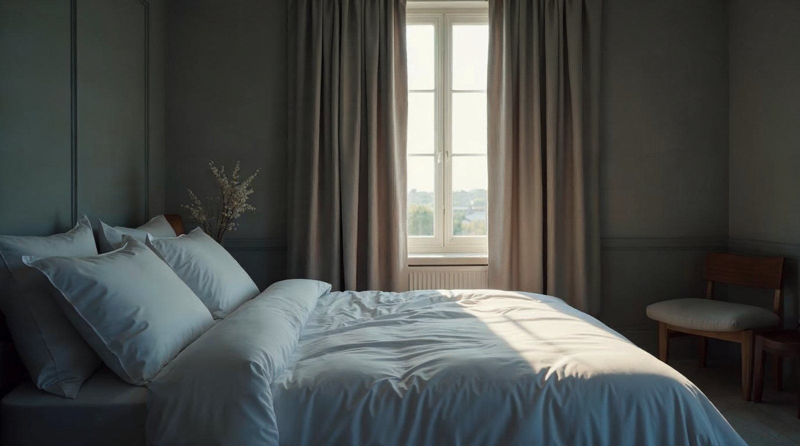
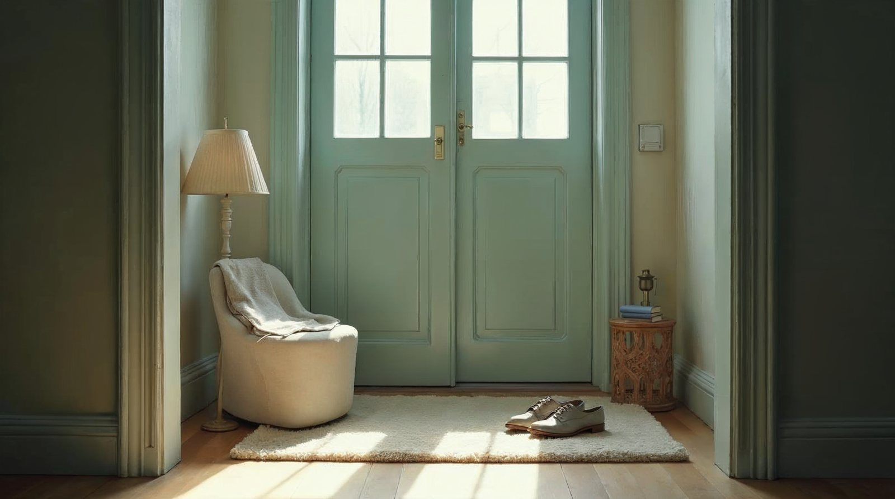
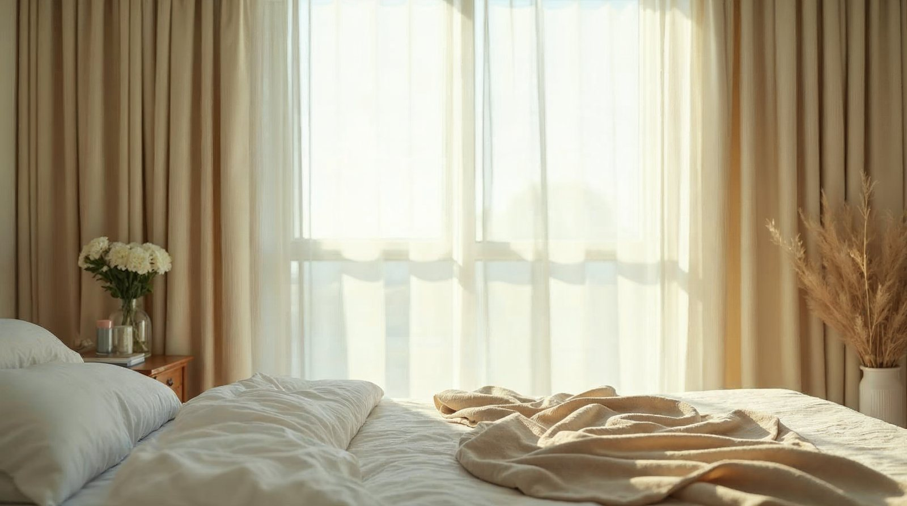
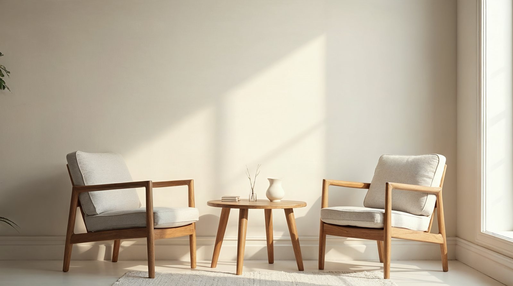
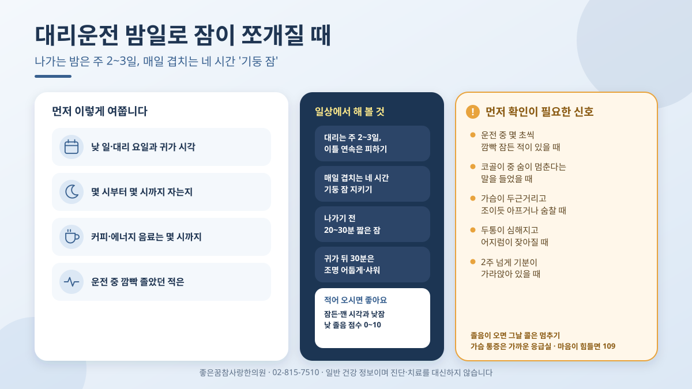

이종호 한의사 감수좋은꿈참사랑한의원 대표원장 (한의사 면허번호 19769)발행 2026-11-27 · 수정 2026-11-27
이 글의 차례
연말이 되면 송년회와 회식이 몰려서 밤늦게 대리운전을 부르는 분이 늘어요. 그만큼 퇴근 뒤 대리운전을 부업으로 나가시는 분들의 밤도 길어지죠. 저녁 아홉 시쯤 나가 콜을 기다리고, 손님을 모셔다 드리고, 다시 다음 콜을 잡다 보면 새벽 두세 시가 넘어서야 집에 들어오게 됩니다. 그리고 몇 시간 뒤엔 낮 일을 하러 또 일어나야 하고요.
이런 날이 이어지면 잠이 짧게 쪼개지는 게 원래 그래요. 귀가하고 나서도 운전하며 쌓인 긴장이 남아서 바로 잠들기 어렵고, 낮에는 머리가 멍하고 하품이 끊이지 않거든요. 몸이 약해서 그런 게 아니에요. 밤에 자도록 맞춰진 몸이 밤에 일하고 있으니 나오는 자연스러운 반응인 거예요.
그러니까 사실은 두 가지를 나눠서 보셔야 해요. '잠이 모자란 것'과 '잠이 쪼개진 것'은 다른 얘기거든요. 하루에 잔 시간을 다 더하면 그럭저럭 되는데도 개운하지 않은 건, 언제 자느냐가 날마다 흔들리기 때문인 경우가 많아요.
그리고 대리운전은 남의 차를 밤에 운전하는 일이라, 졸음은 피로를 넘어 안전의 문제가 돼요. 그래서 저는 먼저 이렇게 권해 드려요. 대리 나가는 밤을 일주일에 2~3일로 정해 이틀 연속은 피하고, 대리를 나가든 안 나가든 매일 같은 시간대에 겹치게 자는 네 시간 남짓의 '기둥 잠'을 지키는 거예요.
나가기 전엔 20~30분 짧게 자고, 귀가 뒤엔 30분 동안 몸을 가라앉히는 순서를 두시고요.
운전 중에 하품이 잦아지고 눈꺼풀이 무거워지거나 신호를 놓칠 뻔했다면, 그날은 콜을 멈추고 귀가하는 게 먼저예요. 코를 심하게 골거나 자다가 숨이 멈춘다는 말을 들으셨다면 잠 자체를 확인해 봐야 하고요.
왜 대리운전을 다녀오면 잠이 쪼개지고 개운하지 않을까요
- 몸의 시계는 밤에 자고 낮에 깨어 있도록 맞춰져 있어, 새벽 세 시에 잠들면 해가 뜨고 집 안이 밝아지며 가족이 움직이는 소리에 잠이 짧게 끊기기 쉽습니다. 같은 네 시간이라도 밤 열두 시부터 자는 잠보다 얕고 자주 깹니다.
- 낯선 차를 낯선 길에서 운전하는 동안 몸은 긴장한 상태를 유지합니다. 이 긴장이 귀가 뒤에도 한두 시간 남아, 몸은 지쳤는데 머리는 맑아 잠들기 어려워집니다.
- 콜을 기다리는 동안 휴대폰 화면을 계속 들여다보면 밝은 빛이 잠 신호를 늦추고, 다음 콜을 놓칠까 봐 귀가 뒤에도 알림을 확인하게 됩니다.
- 추운 거리에서 기다리다 몸이 식고, 따뜻한 차 안에 타면 졸음이 몰려오는 일이 반복되며, 졸음을 쫓으려 커피와 에너지 음료를 늦은 시각까지 마시게 됩니다.
- 콜 사이 편의점에서 컵라면이나 빵으로 늦은 끼니를 때우면 속이 불편해 잠이 얕아지기 쉽습니다.
- 잠이 모자란 날이 쌓이면 몇 초씩 깜빡 잠드는 짧은 졸음이 본인도 모르게 찾아올 수 있습니다. 운전 중에 이런 순간이 오면 위험합니다.
- 연말 성수기에는 조금이라도 더 벌고 싶은 마음에 쉬는 밤을 줄이게 되어, 낮 일과 밤 일 사이에 몸이 회복할 틈이 사라집니다.
- 한의학에서는 밤을 몸이 진액과 음기를 채우는 시간으로 보아, 밤에 깨어 일하는 날이 이어지면 입이 마르고 눈이 충혈되며 손발바닥이 화끈거리고 가슴이 두근거리는 모습이 나타나기 쉽다고 설명합니다. 반대로 기운이 빠져 낮에 몸이 무겁고 늘어지는 분도 있어, 어느 쪽으로 기울었는지를 함께 살펴봅니다.
먼저 이렇게 여쭙니다
- 낮 일의 출근과 퇴근 시각, 대리 나가는 요일과 시간, 귀가하는 시각을 일주일 단위로 여쭙니다.
- 하루에 잠을 몇 번 나눠 자는지, 각각 몇 시부터 몇 시까지인지 여쭙니다.
- 귀가 뒤 잠들기까지 얼마나 걸리는지, 그동안 무엇을 하는지 여쭙니다.
- 낮에 졸음이 얼마나 심한지, 운전 중 깜빡 졸거나 신호를 놓칠 뻔한 적이 있는지 여쭙니다.
- 커피와 에너지 음료를 하루 몇 잔, 몇 시까지 마시는지 여쭙니다.
- 콜 사이 끼니와 야식, 귀가 뒤 잠을 청하려고 술을 마시는지 여쭙니다.
- 코골이나 자다가 숨이 멈춘다는 말을 들은 적이 있는지, 혈압이나 혈당 이야기를 들은 적이 있는지 여쭙니다.
- 졸음이 올 수 있는 감기약이나 알레르기약을 먹고 있는지도 함께 여쭙니다.

일상에서 먼저 해 볼 수 있는 것
일주일 계획부터
- 대리 나가는 밤을 일주일에 2~3일로 정하고, 이틀 연속으로 나가지 않게 사이에 쉬는 밤을 둡니다. 다음 날 아침 중요한 일이 있는 밤은 쉬는 밤으로 정합니다.
- 마지막 콜을 받는 시각을 정해 둡니다. 예를 들어 새벽 한 시가 넘으면 더 이상 콜을 잡지 않기로 하고, 귀가하는 데 걸리는 시간까지 계산해 둡니다.
- 일주일 계획표를 가족과 나눠, 쉬는 밤에는 가족이 함께 일찍 불을 끄는 날로 정해 봅니다.
기둥 잠 지키기
- 대리를 나간 날과 쉬는 날에 공통으로 겹치는 네 시간을 정해, 매일 그 시간에는 잠을 잡니다. 예를 들어 새벽 세 시에 귀가하는 날이 많다면 새벽 세 시 반부터 일곱 시 반까지를 기둥 잠으로 두고, 쉬는 밤에는 그 앞으로 늘려 밤 열한 시 반부터 일곱 시 반까지 잡니다.
- 일어나는 시각은 대리를 나갔든 안 나갔든 가능한 한 같게 둡니다. 몸의 시계는 잠드는 시각보다 일어나는 시각에 더 단단히 맞춰집니다.
나가기 전 저녁
- 대리를 나가기 1~2시간 전에 저녁을 가볍게 먹고, 그 뒤 20~30분 짧게 잡니다. 30분이 넘으면 깊은 잠에 들어 깬 뒤 오히려 멍할 수 있어 알람을 맞춥니다.
- 커피는 나가기 직전에 한 잔 정도로 하고, 새벽 한 시 이후에는 커피와 에너지 음료를 마시지 않습니다. 귀가 뒤 잠들기를 방해하기 때문입니다.
- 장갑과 목도리, 핫팩을 챙겨 추운 길에서 기다리는 동안 몸이 식지 않게 합니다.
콜을 기다리고 운전하는 동안
- 기다리는 동안 휴대폰 밝기를 낮추고, 화면만 보기보다 자리에서 몸을 움직이며 기다립니다.
- 편의점 야식 대신 바나나나 삶은 달걀, 두유처럼 가볍고 속이 편한 간식을 미리 챙깁니다.
- 물은 조금씩 자주 마십니다. 목이 마르고 몸이 건조하면 졸음도 쉽게 옵니다.
- 하품이 계속 나고 눈꺼풀이 무거워지거나, 신호나 갈림길을 놓칠 뻔하고 차가 차선 안에서 흔들린다면 졸음 신호입니다. 손님을 안전하게 내려 드린 뒤에는 그날 콜을 멈추고 귀가합니다.
귀가 뒤 30분
- 현관에 들어서면 거실과 침실 조명을 어둡게 하고, 콜 정산이나 기록은 다음 날로 미룹니다.
- 미지근한 물로 짧게 씻어 바깥 추위와 긴장을 내려놓습니다. 너무 뜨거운 물은 몸을 다시 깨울 수 있습니다.
- 배가 고프다면 따뜻한 우유나 두유 반 컵, 바나나 반 개 정도만 먹습니다. 기름진 야식과 라면은 잠을 얕게 합니다.
- 잠을 청하려고 술을 마시지 않습니다. 술은 처음에는 졸리게 해도 새벽에 잠을 깨우고, 다음 날 피로를 더 키웁니다.
- 가족이 아침에 일찍 움직이는 집이라면 암막 커튼이나 안대, 귀마개를 쓰고, 알람은 하나만 맞춥니다.
낮과 주말
- 낮 일을 하는 동안 점심 뒤 15~20분 짧게 눈을 붙입니다. 오후 세 시 이후의 낮잠은 밤 기둥 잠을 흔들 수 있어 피합니다.
- 아침에 일어나면 창가에서 햇빛을 보거나 바깥을 10분쯤 걸어 몸의 시계를 낮 쪽으로 맞춥니다.
- 주말에 몰아서 자고 싶다면 평소 일어나는 시각보다 두 시간 안쪽으로만 늦게 일어나고, 모자란 잠은 이른 오후의 짧은 낮잠으로 보충합니다.

상황별 예시
- 예를 들어 평일 아홉 시부터 여섯 시까지 사무실에서 일하고 연말에 일주일 네 번 대리를 나가 새벽 세 시에 귀가하는 40대 회사원이, 낮 회의 중 깜빡 졸고 출근길 운전에서도 눈꺼풀이 무거운 경우, 대리 나가는 밤을 화·목·토 사흘로 줄이고 마지막 콜 시각을 새벽 한 시로 정하며, 새벽 세 시 반부터 일곱 시 반까지를 매일 지키는 잠으로 둡니다. 졸음이 가실 때까지 출근은 대중교통으로 바꿉니다.
- 예를 들어 저녁에 가게를 마감한 뒤 대리를 나가 새벽 네다섯 시에 귀가하는 50대 자영업자가, 가게 문을 열기 전 오전에 잠깐 자고 오후 내내 몸이 무거운 경우, 귀가 시각을 앞당길 수 있는 요일부터 정하고, 가게 준비 전 오전 잠을 기둥 잠으로 지키며, 손님이 뜸한 오후 시간에 20분 낮잠을 넣어 봅니다.
- 예를 들어 귀가 뒤 잠이 오지 않아 맥주 한두 캔을 마시고 잠드는 일이 이어진 30대가, 새벽에 자꾸 깨고 아침이 더 무거운 경우, 술 대신 귀가 뒤 30분 정리 순서(어두운 조명, 미지근한 샤워, 따뜻한 두유 반 컵)를 2주 해 보며 잠든 시각과 깬 횟수를 적어 봅니다.
- 예를 들어 손님 차를 운전하다 신호 대기 중 몇 초 깜빡 잠든 경험을 한 경우에는 그 주의 대리 일정을 멈추고 잠을 먼저 채웁니다. 코골이가 심하거나 자다가 숨이 멎는다는 말을 들었다면 수면 검사가 필요한지 확인해 봅니다.
자주 하는 오해
- 하루에 잔 시간을 다 더해 일곱 시간만 되면 괜찮다고 여기기 쉽지만, 언제 자는지와 한 번에 얼마나 이어 자는지도 개운함에 영향을 줍니다. 그래서 매일 같은 시간대의 기둥 잠을 먼저 지킵니다.
- 에너지 음료를 마시면 졸음운전 걱정이 없다고 생각하기 쉽지만, 카페인으로 잠깐 깨어 있어도 모자란 잠은 그대로 남아 짧은 졸음이 찾아올 수 있습니다.
- 술 한 잔이 잠을 도와준다고 여기기 쉽지만, 새벽에 깨는 일이 늘고 잠이 얕아져 다음 날 더 피곤해지는 경우가 많습니다.
- 주말에 오래 몰아 자면 한 주의 피로가 다 풀린다고 생각하기 쉽지만, 일어나는 시각이 크게 밀리면 월요일 밤 잠들기가 더 어려워집니다.
- 낮잠은 길게 잘수록 좋다고 여기기 쉽지만, 30분이 넘는 낮잠은 깬 뒤 멍함이 오래 가고 밤잠을 흔들 수 있습니다.

스스로 점검해 보세요
- 일주일에 네 번 넘게 대리를 나간다.
- 이틀 연속으로 새벽 두 시 넘어 귀가하는 날이 많다.
- 귀가 뒤 잠들기까지 한 시간 넘게 걸린다.
- 새벽 한 시 이후에도 커피나 에너지 음료를 마신다.
- 잠을 청하려고 술을 마신다.
- 낮에 회의나 운전 중 깜빡 조는 일이 있다.
- 일어나는 시각이 날마다 두 시간 넘게 달라진다.

한의원에서 함께 살필 수 있는 경우
- 대리 일정을 줄이고 기둥 잠을 2~3주 지켜도 낮 졸음과 피로가 그대로인 경우
- 귀가 뒤 몸은 지쳤는데 머리가 맑아 잠들기 어려운 날이 일주일에 세 번 넘는 경우
- 밤일이 이어진 뒤 입마름, 가슴 두근거림, 손발바닥 화끈거림, 소화 불편이 함께 늘어난 경우
- 밤일을 줄인 뒤에도 잠의 리듬이 돌아오지 않는 경우
좋은꿈참사랑한의원에서는 첫 방문 때 낮 일과 대리 일정, 잠든 시각과 깬 시각을 일주일 단위로 먼저 차례로 여쭙고, 카페인과 끼니, 술, 낮 졸음 정도를 함께 정리합니다. 그다음 맥부터 짚어 보고, 혀와 배를 살펴 열이 위로 떠 있는지, 기운이 가라앉아 있는지, 소화와 배변은 어떤지 확인하고, 필요하다고 판단되면 진료실에서 혈압도 잽니다.
잠이 모자란 날이 오래 이어지면 체중과 혈당에도 영향이 갈 수 있어, 필요하면 인바디 770이나 당화혈색소 검사로 몸의 흐름을 함께 봅니다. 그 결과를 바탕으로 일주일 잠 계획표를 함께 짜고, 상태에 따라 침이나 한약을 상의합니다. 한약을 상의할 때는 운전 일정과 복용 시각을 함께 맞춥니다.
코골이와 숨 멈춤이 의심되면 수면 검사가 가능한 병원을 먼저 권해 드립니다. 평일에는 저녁 여덟 시까지 진료하므로 대리를 나가기 전 이른 저녁에 들르셔도 됩니다. 다시 오시면 지난번 정한 계획표대로 지내 보셨는지, 낮 졸음이 어떻게 달라졌는지를 이어서 여쭙습니다.
얼마나 지켜보고 언제 상담할까요
- 대리 나가는 밤을 줄이고 기둥 잠과 귀가 뒤 정리 순서를 2~3주 이어 가며, 날마다 낮 졸음을 0~10 점수로 적어 봅니다.
- 2~3주가 지나도 낮 졸음 점수가 줄지 않거나, 일주일에 세 번 넘게 잠들기 어렵다면 상담을 받아 보세요.
- 운전 중 깜빡 졸았던 일이 한 번이라도 있었다면 계획을 바꾸는 것과 함께 바로 잠 상태를 확인합니다.
- 진료 시간은 평일 09:30~20:00(점심 13:00~14:00), 토·일·공휴일 09:30~15:00(점심시간 없음)입니다. 접수 마감 시각은 방문 전 전화로 확인해 주세요.
- 아래 신호가 있으면 지켜보지 말고 먼저 진료를 받습니다.
이렇게 기록해 오시면 상담이 쉬워집니다
밤일을 하다 보면 어제가 오늘 같고 오늘이 어제 같아요. 원래 그래요. 그래서 기억보다 기록이 훨씬 정확하거든요.
- 일주일 동안 잠든 시각과 깬 시각, 낮잠 시각과 길이
- 대리 나간 날과 귀가 시각, 마지막 콜 시각
- 커피와 에너지 음료를 마신 시각과 양, 콜 사이 먹은 음식
- 귀가 뒤 잠들기까지 걸린 시간과 그동안 한 일
- 날마다 낮 졸음 점수(0~10)와 깜빡 졸았던 상황
- 코골이나 숨 멈춤에 대한 가족의 말, 최근 혈압과 검진 결과, 복용 중인 약
기록이라고 거창할 필요는 없어요. 휴대폰 메모장에 한 줄씩이면 충분합니다. 일주일만 모여도 어느 밤에 무리가 몰렸는지가 눈에 보여요.
잠의 리듬과 몸의 피로를 살피는 건 제가 맡을게요. 대신 하나만 부탁드려요. 대리를 나간 날이든 쉰 날이든, 아침에 일어나는 시각만 같게 지켜 주세요. 딴 건 지금 하시던 대로 편하게 하셔도 돼요.
연말 밤길을 버티시는 것만으로도 충분히 애쓰고 계신 거예요. 궁금한 건 그냥 편하게 물어보세요.
이런 증상은 먼저 확인이 필요합니다
- 운전 중 몇 초씩 깜빡 잠들거나, 졸음 때문에 차선을 벗어날 뻔한 적이 있는 경우
- 코를 크게 골다가 숨이 멈춘다는 말을 듣거나, 자다가 숨이 막혀 깨는 경우
- 스스로를 해칠 생각이 들면 ☎ 109로 바로 연락하세요.
이런 신호가 있으면 한의원보다 가까운 병원이나 응급실을 먼저 찾으세요.
관련 글
- 야간 근무를 마친 간호사가 낮에 자야 할 때 침실은 어떻게 준비하나요?
- 식당을 늦게 마감하는 자영업자가 집에 와도 잠들기 어려울 때는 어떻게 하나요?
- 수면 일기는 어떻게 쓰면 진료에 도움이 되나요?

여쭙는 것
- 낮 일의 출근과 퇴근 시각, 대리 나가는 요일과 시간, 귀가하는 시각을 일주일 단위…
- 하루에 잠을 몇 번 나눠 자는지, 각각 몇 시부터 몇 시까지인지 여쭙니다.
- 귀가 뒤 잠들기까지 얼마나 걸리는지, 그동안 무엇을 하는지 여쭙니다.
생활에서 해 볼 것
- 대리 나가는 밤을 일주일에 2~3일로 정하고, 이틀 연속으로 나가지 않게 사이에 쉬…
- 마지막 콜을 받는 시각을 정해 둡니다. 예를 들어 새벽 한 시가 넘으면 더 이상 콜…
- 일주일 계획표를 가족과 나눠, 쉬는 밤에는 가족이 함께 일찍 불을 끄는 날로 정해…
한의원에서 함께 살필 것
- 대리 일정을 줄이고 기둥 잠을 2~3주 지켜도 낮 졸음과 피로가 그대로인 경우
- 귀가 뒤 몸은 지쳤는데 머리가 맑아 잠들기 어려운 날이 일주일에 세 번 넘는 경우
- 밤일이 이어진 뒤 입마름, 가슴 두근거림, 손발바닥 화끈거림, 소화 불편이 함께 늘…
먼저 확인이 필요한 신호
- 운전 중 몇 초씩 깜빡 잠들거나, 졸음 때문에 차선을 벗어날 뻔한 적이 있는 경우
- 코를 크게 골다가 숨이 멈춘다는 말을 듣거나, 자다가 숨이 막혀 깨는 경우
- 스스로를 해칠 생각이 들면 109로 바로 연락하세요.
한눈에 보는 표
| 구분 | 핵심 |
|---|---|
| 여쭙는 것 | 낮 일의 출근과 퇴근 시각, 대리 나가는 요일과 시간, 귀가하는 시각을 일주일 단위로 여쭙니다. 하루에 잠을 몇 번 나눠 자는지, 각각 몇 시부터 몇 시까지인지 여쭙니다. |
| 생활에서 해 볼 것 | 대리 나가는 밤을 일주일에 2~3일로 정하고, 이틀 연속으로 나가지 않게 사이에 쉬는 밤을 둡니다. 다음 날 아침 중요한 일이 있는 밤은 쉬는 밤으로 정합니다. 마지막 콜을 받는 시각을 정해 둡니다. 예를 들어 새벽 한 시가 넘으면 더 이상 콜을 잡지 않기로 하고, 귀가하는 데 걸리는 시간까지 계산해 둡니다. |
| 한의원에서 함께 살필 것 | 대리 일정을 줄이고 기둥 잠을 2~3주 지켜도 낮 졸음과 피로가 그대로인 경우 귀가 뒤 몸은 지쳤는데 머리가 맑아 잠들기 어려운 날이 일주일에 세 번 넘는 경우 |
| 먼저 확인이 필요한 신호 | 운전 중 몇 초씩 깜빡 잠들거나, 졸음 때문에 차선을 벗어날 뻔한 적이 있는 경우 코를 크게 골다가 숨이 멈춘다는 말을 듣거나, 자다가 숨이 막혀 깨는 경우 |
자주 묻는 질문
대리 나가기 전 낮잠은 얼마나 자는 것이 좋을까요?
20~30분이 무난합니다. 30분이 넘으면 깊은 잠에 들어 깬 뒤 멍한 시간이 길어질 수 있어 알람을 맞추고, 잠이 잘 오지 않더라도 눈을 감고 누워 쉬는 것만으로도 도움이 됩니다.
에너지 음료를 마시고 운전해도 괜찮을까요?
카페인으로 잠깐 깨어 있어도 모자란 잠은 그대로 남아 짧은 졸음이 올 수 있습니다. 새벽 한 시 이후에는 피하고, 졸음 신호가 오면 그날 일을 멈추는 쪽을 먼저 생각해 주세요.
귀가 뒤 잠이 오지 않을 때 수면유도제를 먹어도 되나요?
다음 날 낮에 졸음이 남아 운전에 영향을 줄 수 있어, 드시기 전에 의사나 약사와 먼저 상의하세요. 그전에 귀가 뒤 30분 정리 순서와 기둥 잠부터 2주쯤 지켜보시길 권합니다.
쉬는 밤에 일부러 일찍 누웠는데 잠이 안 와요.
평소보다 한참 일찍 누우면 오히려 뒤척이기 쉽습니다. 쉬는 밤에는 기둥 잠 앞으로 한두 시간만 당겨 눕고, 20분쯤 지나도 잠이 오지 않으면 잠시 일어나 어두운 곳에서 쉬다가 졸릴 때 다시 눕습니다.
연말이 지나고 대리를 그만두면 잠은 바로 돌아오나요?
몇 주 동안 밤에 깨어 있던 리듬이 몸에 남아 있어 며칠에서 2주쯤 걸리는 분이 많습니다. 일어나는 시각을 먼저 고정하고 아침 햇빛을 보며 잠드는 시각을 조금씩 앞당겨 보세요.
좋은꿈참사랑한의원은 재진 때 지난번 이야기부터 이어서 여쭙니다. 진료시간과 예약은 오시는 길에서 확인하세요.
어디서 상담받을 수 있나요?
좋은꿈참사랑한의원은 서울 동작구 만양로2길 2 신성빌딩 3층·5층(서울 동작구 상도동, 7호선 상도역 3번 출구 근처)에 있습니다. 한의사 3명(이종호 대표원장, 조영기 수석진료원장, 정원영 진료원장)이 진료합니다. 진료시간은 평일 09:30~20:00(점심 13:00~14:00), 토·일·공휴일 09:30~15:00이며, 방문 전 전화로 확인을 권합니다. 예약은 네이버 예약, 카카오톡 상담, 전화 02-815-7510로 받습니다.
이 글은 일반적인 건강 정보이며 개인의 진단이나 치료를 대신하지 않습니다. 증상이 있거나 복용 중인 약이 있다면 진료를 통해 확인하세요. 치료 효과는 개인마다 다를 수 있습니다.
작성 기준: 일반적으로 알려져 있는 건강 정보를 참고해 정리했습니다(대표원장 감수). 증상 기록은 1~2주 동안 하루 1회, 비슷한 시간에 적어 오시면 지난 상태와 비교하기 쉽습니다.